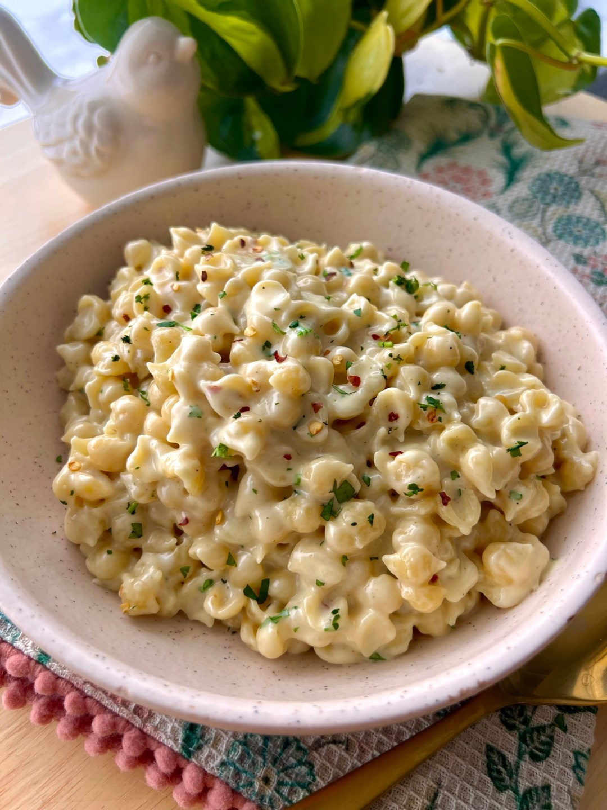

Pasta

Description
Pasta is culinary magic born from just flour and water. Rolled, twisted, or stuffed, this Italian masterpiece transforms into hundreds of playful shapes like pockets, tubes, and ribbons. It acts as a blank canvas, perfectly catching everything from rich, velvety cheeses to fiery tomato sauces, making every single bite a comforting, globetrotting adventure.
For this recipe, we are making the ultimate creamy comfort food: a dreamy white sauce pasta that looks and tastes just like homemade mac and cheese.We will toss tender, shell-shaped pasta in a rich, velvety cheese sauce, then finish it with a sprinkle of fresh herbs and fiery chili flakes. It is thick, ultra-creamy, and satisfies that deep cheese craving in every single bite.
Ingredients
For the Pasta
- 2 cups Pasta (Shells, Macaroni, or Penne)
- Water (for boiling)
- 1 tsp Salt
For the White Sauce (Bechamel Base)
- 2 tbsp Butter
- 2 tbsp All-Purpose Flour
- 2 cups Whole Milk (warm)
- 2 cloves Garlic (finely minced)
The Cheese & Seasonings
- ½ to 1 cup Cheddar or Mozzarella Cheese (shredded)
- 1 tsp Red Chili Flakes
- 1 tsp Mixed Italian Herbs or Oregano
- ½ tsp Black Pepper (freshly crushed)
- Salt (to taste)
For the Garnish
- 1 tbsp Fresh Parsley or Coriander (finely chopped)
- Extra pinch of Chili Flakes
Step-by-Step Instructions
-
Boil the Pasta
- Bring a large pot of salted water to a rolling boil.
- Add 2 cups of pasta and cook until al dente (tender but with a slight bite).
- Drain the pasta, but reserve ½ cup of the starchy pasta water for later. Set aside.
-
Cook the Garlic
- Melt 2 tbsp of butter in a pan over medium-low heat.
- Add 2 finely minced garlic cloves and sauté for about 1 minute until fragrant. Do not let it brown.
-
Make the Roux (Thickener)
- Sprinkle in 2 tbsp of all-purpose flour.
- Whisk continuously for 1 to 2 minutes to cook out the raw flour taste. The mixture should look slightly bubbly and golden.
-
Build the White Sauce
- Turn the heat to low.
- Slowly pour in 2 cups of warm milk in a thin stream while whisking vigorously to prevent any lumps from forming.
- Cook on medium heat for 3 to 4 minutes, stirring constantly, until the sauce thickens enough to coat the back of a spoon.
-
Season and Melt the Cheese
- Stir in 1 tsp red chili flakes, 1 tsp Italian herbs, ½ tsp black pepper, and salt to taste.
- Turn off the heat. Add ½ to 1 cup of shredded cheese and stir until completely melted and smooth.
-
Combine and Garnish
- Toss in the cooked pasta and gently fold it into the velvety sauce.
- If the sauce is too thick, splash in a few tablespoons of your reserved pasta water to loosen it up.
- Garnish with freshly chopped parsley and an extra pinch of chili flakes. Serve hot!